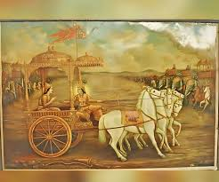

সরল ভাবার্থ
অর্জুন শ্রীকৃষ্ণকে বললেন— হে অচ্যুত! আমার রথটি দুই পক্ষের সেনাবাহিনীর মাঝখানে স্থাপন করুন। আমি একবার দেখতে চাই যে এই যুদ্ধের আকাঙ্ক্ষায় এখানে কারা কারা সমবেত হয়েছে এবং এই মহাসংগ্রামে আমাকে কাদের বিরুদ্ধে যুদ্ধ করতে হবে।
বিস্তারিত ধর্মীয় ব্যাখ্যা
অর্জুন শ্রীকৃষ্ণকে এখানে দুটি গুরুত্বপূর্ণ নামে সম্বোধন করেছেন—'হৃষীকেশ' এবং 'অচ্যুত'। হৃষীকেশ মানে যিনি ইন্দ্রিয়ের অধিপতি। অর্জুন জানতেন না যে তাঁর ইন্দ্রিয়গুলো শীঘ্রই মোহের কবলে পড়তে যাচ্ছে, তাই অবচেতনভাবেই তিনি তাঁর ইন্দ্রিয়ের নিয়ন্ত্রণকর্তার সাহায্য চাইছেন। 'অচ্যুত' মানে যাঁর কোনো চ্যুতি বা পতন নেই। ভগবান পরমেশ্বর হওয়া সত্ত্বেও অর্জুনের রথের সারথি হওয়া স্বীকার করেছেন, যা ভক্তের প্রতি তাঁর অসীম ভালোবাসা প্রমাণ করে। অর্জুনের নির্দেশ ছিল রথটি দুই বাহিনীর ঠিক মাঝখানে (রণসমুদ্যমে) স্থাপন করা। এটি ছিল কুরুক্ষেত্রের যুদ্ধের সবচেয়ে সন্ধিক্ষণ।
অর্জুন কোনো ভয় থেকে নয়, বরং এক বীর যোদ্ধার কৌতূহল থেকে শত্রু পক্ষকে পর্যবেক্ষণ করতে চেয়েছিলেন। তিনি দেখতে চেয়েছিলেন কারা এই অন্যায্য যুদ্ধে দুর্যোধনের অন্ধ আনুগত্য করছে। কিন্তু এই 'নিরীক্ষণ' বা দেখার ফল হলো ভয়ানক। ধর্মীয় দিক থেকে এটি এক মহান শিক্ষা—আমরা অনেক সময় নিজেদের খুব শক্তিশালী ভাবি, কিন্তু যখন মায়ার পর্দা চোখের সামনে আসে, তখন আমাদের বুদ্ধি কাজ করা বন্ধ করে দেয়। অর্জুন ভেবেছিলেন তিনি বীর বিক্রমে যুদ্ধ করবেন, কিন্তু শ্রীকৃষ্ণ তাঁকে এমন জায়গায় নিয়ে দাঁড় করালেন যেখানে তাঁর সামনে ছিল তাঁরই গুরু দ্রোণ এবং পিতামহ ভীষ্ম। দুই সেনাদলের মাঝখানে রথ রাখা মানে হলো জীবনের চরম নিরপেক্ষতায় দাঁড়িয়ে সত্যের মুখোমুখি হওয়া। শ্রীকৃষ্ণ এখানে নীরব শিক্ষক। তিনি জানতেন অর্জুনের মনে কী চলতে চলেছে, তাই তিনি কোনো কথা না বলে রথটি ঠিক মাঝখানে নিয়ে গেলেন। এই শ্লোকটি আমাদের শেখায় যে, জীবনের বড় সংগ্রামে নামার আগে নিজেকে চেনা এবং পরিস্থিতি বোঝা জরুরি, তবে সেই দেখার সাথে যদি সঠিক জ্ঞান না থাকে, তবে মানুষ দিশেহারা হয়ে পড়ে। অর্জুনের এই জিজ্ঞাসাই গীতার অমৃতবাণীর উৎস তৈরি করল।

[ছবি: দুই বিশাল বাহিনীর মাঝখানে শূন্যস্থানে অর্জুনের রথটি স্থির হয়ে দাঁড়িয়ে আছে, অর্জুন সামনের দিকে ইঙ্গিত করে কৃষ্ণকে কিছু বলছেন।]